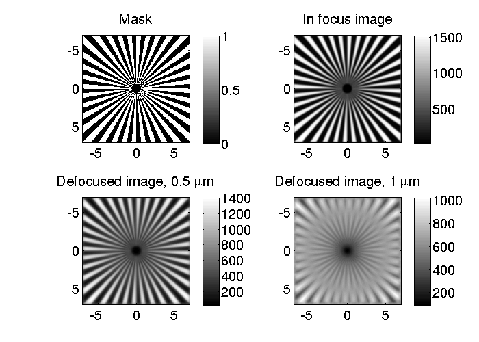

Contents
- Simulated image of the Siemens star from the MBL/NNF amplitude target under bright-field microscope.
- Set parameters of the microscope and the object.
- Choose small simulation region for reasonable runtime.
- Parameters of dark-field microscope and the image.
- Computation takes time, so results of computation may be saved.
- Compare images and the pattern.
Simulated image of the Siemens star from the MBL/NNF amplitude target under bright-field microscope.
The image is simulated in-focus and at defocus of 0.5 and 1um.
Written by Shalin Mehta, www.mshalin.com License: GPL v3 or later.
% This file is part of microlith package. % % microlith is free software: you can redistribute it and/or modify % it under the terms of the GNU General Public License as published by % the Free Software Foundation, either version 3 of the License, or % (at your option) any later version. % % microlith is distributed in the hope that it will be useful, % but WITHOUT ANY WARRANTY; without even the implied warranty of % MERCHANTABILITY or FITNESS FOR A PARTICULAR PURPOSE. See the % GNU General Public License for more details. % % You should have received a copy of the GNU General Public License % along with microlith. If not, see <http://www.gnu.org/licenses/>.
Set parameters of the microscope and the object.
clear all; clc; wavelength=0.577; NAo=1.3; RISiO2=1.55; ThickSiO2=0.09; zsim=[0 0.5 1]; Rsim=7; % Radius over which simulation is performed. xsim=-Rsim:0.02:Rsim;
Choose small simulation region for reasonable runtime.
SimensPattern=mblnnfSiemens(xsim,xsim,0); % Open the matlabpool if parallel computing toolbox is installed. % matlabpool 3;
Parameters of dark-field microscope and the image.
BFparams.NAo=NAo; BFparams.wavelength=wavelength; BFparams.NAc=NAo; BFparams.nImm=1.515; BFparams.nEmbb=1.33; BFsys=microlith(xsim,zsim); BFsys.computesys('Brightfield',BFparams); BFThroughFocus=BFsys.computeimage(SimensPattern,'multiCPU');
Computation takes time, so results of computation may be saved.
%save([savedir 'MBLNNF_SiemensStar_BFimg.mat'],'BFsys'); %load([savedir 'MBLNNF_SiemensStar_BFimg.mat'],'BFsys');
Compare images and the pattern.
Notice the artifacts very close to the edge. This example illustrates the need for the simulation grid to be slightly larger than the feature of interest. At defocus of 0.5 um, the resolution is slightly degraded. At defocus of 1 um, we start seeing contrast reversals.
figure(1); set(1,'Color','white','defaultaxesfontsize',16); colormap gray; h(1)=subplot(221); imagesc(xsim,xsim,SimensPattern); axis equal; axis tight; colorbar; title('Mask'); h(2)=subplot(222); imagesc(xsim,xsim,BFsys.img(:,:,1)); axis equal; axis tight; colorbar; title('In focus image'); h(3)=subplot(223); imagesc(xsim,xsim,BFsys.img(:,:,2)); axis equal; axis tight; colorbar; title('Defocused image, 0.5 \mum'); h(4)=subplot(224); imagesc(xsim,xsim,BFsys.img(:,:,3)); axis equal; axis tight; colorbar; title('Defocused image, 1 \mum'); linkaxes(h);